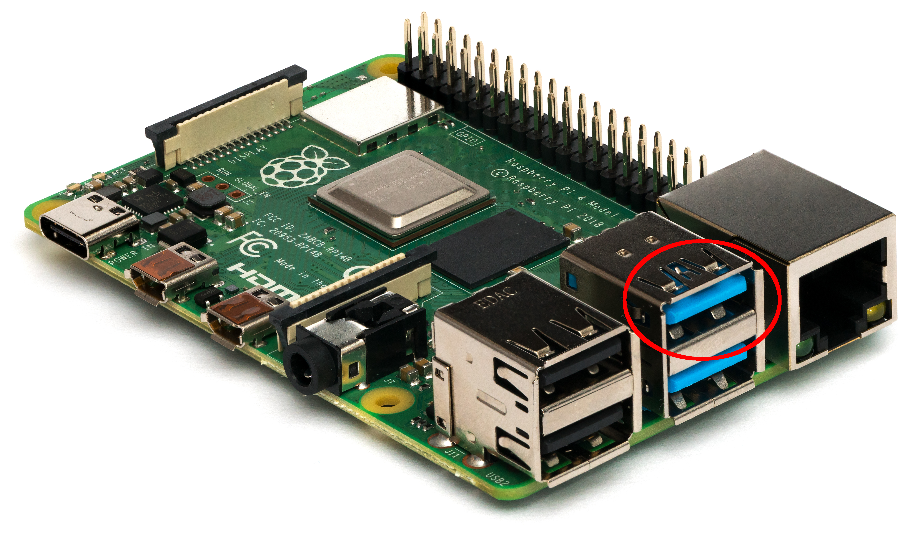

Tips
Here are a few useful tips for working with NeonOS
SSH
You can connect a remote terminal to your NeonOS device using SSH and the default
username/password of neon/neon. For most terminals, the command will look like:
ssh neon@<Neon Device IP Address>
On-device Terminal
A terminal can be accessed on a NeonOS device by connecting a keyboard and
pressing ctrl+shift+f1. The terminal will be shown on-screen until dismissed
but note that changes in the GUI may take focus away from the terminal until you tap/click it again.
Taking a screenshot
You can ask Neon to "take a screenshot" to create a screenshot saved on-device.
The path of the created file will be displayed on-screen as a notification. To
retrieve a screenshot, you can use scp or shut down your mark 2 and plug the
USB drive into another computer that can read an EXT4 file system(Linux or MacOS).
Getting device IP address
You can ask Neon "what is my IP address" to get the device IP address. You can
also access this via the Settings Menu, under About.
Installing On Raspberry Pi
The OS drive should be installed to the port marked in the image below. Other ports may work, but installing to the proper port ensures that the boot drive is loaded first and helps avoid issues with other USB devices at boot time.
